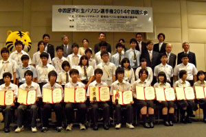

情報教室と授業支援
MM教室と第1情報教室には、教員の操作を見やすくする中間モニターがあり、1・2年次の実習は原則2名の教員が担当します。
- 2つの情報教室
- MM教室
- 第1情報教室
- 中間モニター
- 2人教員制授業
環境と成果
2つの情報教室、制作・開発環境、資格学習、大会や公募への挑戦が専門学習を支えます。



MM教室と第1情報教室には、教員の操作を見やすくする中間モニターがあり、1・2年次の実習は原則2名の教員が担当します。
Adobe Creative Cloud、Microsoft Office、Visual Studio、3Dプリンターを使い、学校と自宅で制作や開発を続けられます。
授業と放課後学習をつなぎ、情報系検定、ITパスポート、基本情報技術者、情報セキュリティマネジメントへ挑戦します。
プログラミング大会、情報処理選手権、キャラクターやコピーの公募へ、授業で培った処理力と表現力を生かします。